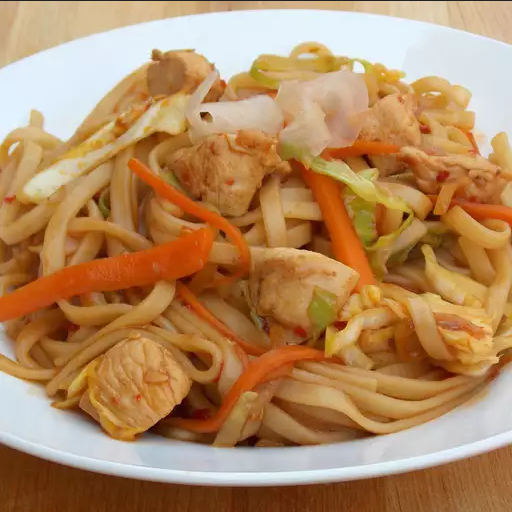

Chicken Yakisoba

Description
This traditional Japanese yakisoba noodle dish includes cabbage and chicken in a spicy sauce.
Ingredients
- 2 tablespoons canola oil
- 1 tablespoon sesame oil
- 2 skinless, boneless chicken breast halves - cut into bite-size pieces
- 2 cloves garlic, minced
- 2 tablespoons Asian-style chile paste
- ½ cup soy sauce
- 1 tablespoon canola oil
- ½ medium head cabbage, thinly sliced
- 1 onion, sliced
- 2 carrots, cut into matchsticks
- 1 tablespoon salt
- 2 pounds cooked yakisoba noodles
- 2 tablespoons pickled ginger, or to taste (Optional)